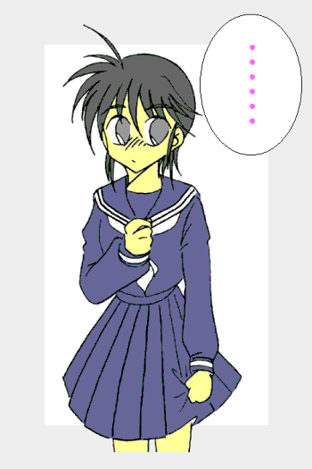

平和な日本に突如現れた謎のテロリスト集団「エネミーＱ」
彼らはどこからともなくあらわれ、いくつもの都市を破壊して去っていった。
日本政府は自衛隊を再編して国防軍を組織し、さらに敵の人型機動兵器を奪取して一人の少女をパイロットとして任命した……
「鋼鉄の女神」、「閃光の戦乙女」 ……通称「響子ちゃん」の誕生である。
響子：「いきなり『ちゃん』付けで呼ぶんじゃねーっ！！ 気色悪いじゃねえかっ！！」
超装甲機動兵器ライトニング 外伝
(それさえもおそらくはそれも平穏な日常)
作：ライターマン
Ｅｐｓｏｄｅ１：悲しきバレンタイン
（少年少女文庫第二掲示板にアップしたものの再掲載。ライトニング２からしばらく後の話）
国防軍横田基地。
その日、基地内はざわついていた。
男性たちは女性たちがそばを通るたびにそわそわし、女性たちは少し大きめの箱から一口サイズのチョコを配りつつ、やや小さな箱を目立たないように隠し持って歩き回っている。
「みんな浮付いているねー」
事務棟のオフィスの隅で人々を見ながら、沢木響子（さわき・きょうこ）大尉はつぶやいた。
「仕方ありませんわ、バレンタインですもの」
響子の後ろに立っている榎本加代子（えのもと・かよこ）少尉は微笑みながらそう言った。
「沢木大尉は何もしないんですか？」
榎本は尋ねてみるが、響子は、
「ま、この体だからな。誰も俺にチョコをあげようなんて気にはならんさ」
……と、自分の体を見まわして肩をすくめながら言った。
女性士官の制服に身を包み、基地内の男性……そして一部女性のアイドル的存在である響子。
しかしこの彼女、以前は「迫水恭平」というれっきとした男性だったのだ。
しばらく前、国防軍が鹵獲した人型機動兵器を解析中、不幸な事故（？）が発生。迫水が操縦システムにパイロットとして認められる代わりに、その体を本来のパイロットである少女のものに書き換えられてしまったのだ。
現在基地内でこのことを知っているのは、機動兵器の鹵獲および解析を指揮していた防人巌（さきもり・いわお）大佐、そして大佐の副官で響子のサポート兼監視役の榎本少尉のみである。
本来バレンタインとは告白するのが男でも女でも、送るのがチョコでなくても構わないのだが、日本では伝統的（？）に、「女性が男性にチョコを送る」ことになっている。
精神は男性でも、見た目は１０代の少女である自分にチョコをくれる人はいない。そう思って答えたのだが、榎本は苦笑しながら、
「いえ……そうじゃなくて、誰かにチョコを上げようとか、告白をしようとか」
と尋ねてきた。
「俺が？ 冗談じゃないぜ！！」
響子は身震いしながらそう答えた。
「沢木大尉は弓削大尉のことをどう思ってるんです？」
榎本が響子に尋ねると、答えはすぐに返ってきた。
「あいつはいい奴だよ。あいつは俺に色目を使わないからな。こっちも気を使わなくて済む」
「じゃあ、同僚として？」
「もちろん」
「ふ〜〜ん？」
「な……何だよ？」
「『……ん〜弓削さ〜ん、『プライベートでは階級のことは言わないようにしよう』って〜言ったじゃないですかぁ〜』」
先日の祝勝会での響子のセリフをマネる榎本。
「ばっ、ば、馬鹿野郎ーーー！！」
顔を真っ赤にした響子の叫びがオフィスに響きわたった。
夜、ライトニングの整備と調整を終えた響子は、基地内の宿舎に戻ろうとしたが、オフィスの電気が１ヶ所だけ点いているのに気がついた。
オフィスにいたのは弓削であった。
弓削は地図や書類を脇に積み上げて、黙々とキーボードを叩いていた。
「弓削さん。まだ仕事ですか？」
「ああ、全国各地の兵員や装備の配置状況についての分析と、防御力の弱い地方に対する対処案を作成していたんだ。もうすぐ終わるので心配は無用だ」
「そうですか……おや？ それは？」
響子が机の上を見ると、いろんな柄の紙に包まれたチョコレートが隅のほうにかたまっていた。
「女子職員たちが置いていったんだ。彼女たちは口々に『義理だ』と言っていたのだが、これが義理とどういう関係にあるのか……」
弓削が理解に苦しむと言った感じで喋っているのを見て、響子は失礼と思ったが吹き出してしまった。
弓削は幼い頃から海外、それも中近東やアフリカで過ごしており、帰国したのも「エネミーＱ」の攻撃が本格化してからなので、バレンタインや義理チョコといった日本の習慣に慣れていなかったとしても不思議ではない。
「すいません……まあ、日ごろお世話になっている弓削さんに対して感謝の気持ちをこめて、みたいなもんですよ……ちょっと待ってて下さい」
そう言って響子はオフィスを出たのだが、しばらくするとコップを手に再び入ってきた。
コップの中身はココアだった。
「……これは？」
「感謝の気持ちってやつですよ。冷徹な表情の内側で人一倍悩み、俺達兵士や住人のことを常に考えている弓削正義と言う男性に対する……ね」
「そうか……ありがとう」
そう言って弓削はカップの中のココアを飲み干した。
それはココアの温度以上に弓削の胸を熱くするものだった。
「沢木君……この書類が片付いたら……お礼に一緒に食事でも……」
飲み干した紙コップに目を落とし、弓削はこうつぶやいた。
しかし、その頃沢木は既にオフィスの出入り口のところまで移動しており、
「じゃあ俺はこれで失礼します。……弓削さん、くれぐれも体を壊さないように」
と言うとさっさとオフィスを去ってしまった。
後に残された弓削は一人固まっていた。
（Episode1おわり）
Ｅｐｓｏｄｅ２：お花を持って
(ライトニング３より１週間後の話)
国防軍横田基地女性宿舎
ガランとした廊下を響子が一人歩いていた。
現在は平日の午前１０時、普通なら全員オフィスまたは格納庫の方に出ていて、誰もいないはずである。
では何故響子はここにいるのか？ 実は先日の戦闘で命令無視、独断専行をやってしまい謹慎中なのである。
もっともこれは、普段休みを取ろうとしない彼女と弓削を気遣って防人が下した処置であり、目立たなければ外出もＯＫということになっている。
ただ、弓削の方の謹慎は３日前に終わっているので、自分一人だけでどこかに行く気にもなれずに、宿舎で暇な時間を過ごしていたのだ。
談話室でジュースを何本か買って部屋に戻ろうとした響子は、部屋の前で榎本とばったり出会ってしまった。
「あれ？ 榎本少尉、今日は休みなのか？」
そう質問する響子に、榎本は、
「ええ、今日はちょっと用事があるので。……沢木大尉の方は、今日はどこも出かけられないんですか？」
と、響子に聞き返してきた。
「一人で出かけてもあまり面白くないんでね。地図やガイド本を談話室から借りたから、それを眺めていいところがあれば出かけるさ」
響子はそう答えて肩をすくめた。
そんな彼女を見て榎本はしばらく考えていたのだが、やがてにっこりと微笑むとこう言った。
「沢木大尉、特に行きたい所がないのでしたら、私と一緒に出かけませんか？」
２０分後。

（Episode2おわり）
Ｅｐｉｓｏｄｅ３：暴かれた計画
（ライトニング３と４の間の話。本編では語られていないが、一度「エネミーQ」が現れ、撃退した事があった）
国防軍横田基地。
その日の夜、基地に戻ってきた響子は、疲れた体を引きずるようにしてオフィスにたどり着いた。
国防軍が所有する人型機動兵器ライトニングの操縦者である彼女は、１週間ほど国防軍の情報分析部門へ出張していた。
以前、「エネミーQ」はライトニングを標的にした作戦を行なったが、このとき海に浮かぶ巨大な物体が「凶戦士」と戦闘機を射出するのと、そして射出後にその物体が海中に潜るのが目撃された。
報告を受けた国防軍では、日本近海に定位置に浮かび、海中を移動する物体を感知するためのソナーブイを配置することにした。
しかし、まだ日本近海全域をカバーできるほど配置されてはおらず、一週間前の侵攻時にはくだんの潜行巨大物体を事前に検知する事はできなかった。
だがこのとき、ライトニングに搭乗していた響子は「エネミーQ」を撃退後、発進地点に急行し、海中を潜行し探知不能になる寸前の物体の音響データを採取することに成功した。
そこで国防軍は、ソナーブイのセンサを採取した音響データにあわせて改造し、ライトニングの記録から割り出された予想進路を基に再配置することにした。
そして、そのためのアドバイザーとして響子は呼び出されたのである。
時刻は夜９時過ぎ、誰もいないと思ってオフィスに入った響子だったが、中では弓削がまだ作業を続けていた。
「弓削さ……大尉、まだやってたんですか？」
プライベートのつもりでつい「弓削さん」と呼びかけた響子だったが、オフィスの中だったのを思い出し、あわてて言い直した。
「あ……ああ、この報告書を明日の午前中に提出しなければならないからな。それより沢木大尉こそ、今出張から戻ってきたようだが、これから作業するつもりかね？」
「いえ、自分は荷物と資料を置きに来ただけです。報告書は明日作成します」
「そうか、土日も出張だったのに大変だな」
「弓削大尉ほどではありませんよ。それに休日は明後日に振り替えてますから。……それでは仕事の邪魔になるといけませんから、これで失礼します」
そう言ってオフィスを退出しようとした響子だったが、背後から弓削が呼び止めた。
「沢木……君、明後日は私も休みなのだが……」
２日後の早朝、国防軍横田基地女性宿舎。響子の部屋。
コンコン……ガチャリッ。「沢木大尉、入りますよ」
ノックの後、ドアが開いて榎本が入ってきた。
「榎本少尉、どうしたんだ？ 今日は俺、非番なんだけど」
「ええ知ってます。これから弓削大尉とデートなんでしょう？」
「……なっ！？」
いきなり榎本に「デート」と言われて、響子は動揺した。
一昨日、同じ日に休むことを知った響子は、弓削に誘われてどこかに出かけようという事になった。
普段から夜遅くまで仕事をしていて働きすぎではないかと心配していた響子は、疲労回復と気分転換になると思ってこれに賛成し、高尾山に行くことを提案した。
高尾山なら横田基地から近いし、登山道も整備されている。何よりも自然に囲まれたこの場所は気分転換に最適だと思ったのだ。
だから、これは友人を気遣って休みを一緒に過ごすだけであってデートではないのだ！！（……と思っているのは恐らく響子本人だけである）
「ち、違う！！ 今日は偶然休みが重なっただけだ。デートなんかするつもりはないぞ」
「あら？ 沢木大尉の休みは確かに出張前から予定されていましたけど、弓削大尉の方は昨日の朝に『明日休む』と言ったんで、『これは何かあるな』と思ったんですけど？」
「えっ！？ ……あいつめ……」
このとき、前から休む予定だったと言っていた弓削の言葉が嘘だという事を初めて知った響子は、密かに舌打ちした。
「それに、昨日は沢木大尉の様子も普段と違いましたから。ときどき報告書を作成する手を止めてはニコニコしてましたし……」
「そ、そうだったっけ？」
自覚がなかった響子は落ち着かなくなり、そわそわしだした。
「なにより休みの日の早朝なのに、すでに起きていて着替えまでしているじゃないですか」「……うっ！！」
これには何も言い返せなかった。
普段であれば滅多に無い休みの日は昼近くまで寝ている響子だったが、この日は平日より早く起きてしまい、どの服を着て行こうか（選ぶほど服は無いのだが）とクローゼットの前で迷っていたのだった。
「それにしても地味な服ですね」
「……げっ！！」
榎本の言葉を聞いて響子は慌てた。このセリフの後に続く展開がなんとなく想像できたので。
「……も、もう出なくちゃ。榎本少尉、俺の代わりに戸締りをしておいてくれ」
そう言って部屋から出て行こうとしたのだが、襟首をがっちりと掴まれてしまった。
「さあ、沢木大尉のデートが上手くいくように私が手伝ってあげますわ」
「だからデートじゃないんだって……」
例によって抵抗する響子の言葉を完全に無視し、榎本は響子を自分の部屋へ連れて行った。
高尾山登山道。
「……で、こんな格好をしてるのさ」
「くくっ……そ、そうか」
響子の話を聞いて、弓削は声を押し殺しながら笑った。
今の響子の服装は白の長袖ブラウスに黒のスカート。シンプルではあるが、スカートの方は膝上１０センチ以上のミニスカートである。
「笑うな！ 大体弓削さんが急に休みを取るからバレたんじゃないか！！」
「そ、それは……」
「おまけに基地から後をつけてくる連中が最低１０人はいたし……まあ、尾行をまいたテクニックはさすがだったけど……」
「うっ……す、すまない」
「……まあいいさ、弓削さんは働き過ぎる傾向があるからね。休みを取るようになったのはいいことさ」
「お互いにな」
そう言って二人は笑い合った。
二人は国防軍の戦力の中で重要な位置におり、彼らの働きにより多くの生命が救われていると言っていい。
だが、そんな二人にも休息の時は必要なのだ。
ややあって弓削が口を開いた。
「し、しかし沢木君のその格好、似合ってるよ……綺麗だ」
「…………弓削さんのスケベ」
響子が顔を赤くして答えるが、何となく嬉しそうであった。
実際響子としては榎本に送り出された後、こっそり宿舎に戻って着替えることも出来たのだが、弓削が喜ぶかも……と思いそのままの格好で来たのだった。
二人は（スカートが捲れるので大股で歩けない）響子のペースに合わせてゆっくりとで歩いていたのだが、どこかに引っかかったのか、響子の体が急に傾いた。
「うわっ！！」「……危ない！！」
倒れかけた響子を支えようと、まわり込んでその体を受け止める弓削。そして弓削にしがみつき、その腕の中に抱かれる響子。
「「………」」
二人は抱き合う形でしばらくそのままでいたが、突然飛び退くようにその場を離れた。
「ご、ごめん！！」
「い……いやこちらこそすまない」
互いに謝った後、二人はぎこちなく笑った。
しばらくして響子が歩き出し、そして言った。
「弓削さん、今度から出かけるときは、もう少し慎重に計画してからにするか……仕事が終わってからいける場所にしようぜ。毎回こんなじゃ休養にならないもんな」
「そうだな、沢木君と一緒に出かけることが出来るのなら、どこへいっても私にとってはいい休養になるし」
「それはいいけど……そういうのを他の奴に言うなよ。みんな俺たちのことを恋人だと誤解しているから」
「誤解って…………まあ、いいか」
新緑の森の木漏れ日の中、彼らは登山道を再び歩き始めた。
（Episode3おわり）
Ｅｐｉｓｏｄｅ４：Please once more
（ライトニング６、沈みゆく「エネミーQ」本拠地より）
太平洋上。
何もない筈の海原に浮かぶ超巨大な物体。
しかし、度重なる攻撃により物体はあちこちで爆発を起こし、いつ沈み始めてもおかしくないような状態であった。
その物体の上空を防人、弓削、そして榎本を乗せたヘリコプターが捜索のために飛んでいた。
「いました！ あそこです！！」
榎本が指差した先、中枢ブロック外縁部を見ると、一人の人物が手を振っている。
その人物が国防軍パイロット、ライトニング操縦者である沢木響子大尉であると確認したヘリは、高度を落とし彼女に近付いていった。
……が、
グワンッ！！
響子の近くで爆発が発生し、爆風で彼女は海上に投げ出された。
「沢木大尉っ！！」
榎本が悲鳴を上げる。
響子は気を失ったらしく、海面に浮かんだまま身動き一つしない。
ヘリは防人の操縦で海面に浮かぶ彼女の近くまで移動したが、あまり近付き過ぎるとヘリの巻き起こす風で彼女が溺れてしまう……
「ヘリをこの位置で止めてください！！ 私が降りて彼女を救出します！！」
弓削は叫ぶと同時に救助用のワイヤーを装着すると、響子のいる海面に向かって降りていった。
爆発炎上する巨大物体の間近で行なう救出作業。だが防人は周囲の爆発の状況や気流の動きを巧みに読んでヘリを固定し、弓削は驚異的な速さで海上に降りると、響子を捕まえワイヤーを巻き上げさせた。
響子を収容すると、ヘリはすぐにその場を離れ、本土の病院に向かって全速力で移動を開始した。
「沢木君！！」
弓削が叫ぶ。しかし響子は海水を大量に飲んだらしく、ぐったりして動かない。
「人工呼吸を！！」
叫ぶ榎本の声を聞きながら、弓削は響子の胸骨を圧迫する。
「そうじゃなくてマウスツーマウスを……」
と言う榎本の声を無視して圧迫を繰り返すと、響子は息を吹き返し、体の中の海水を吐き出した。
その様子に、ヘリの中の一同はホッと胸を撫で下ろした。
「沢木君……よかった……」
弓削は思わず響子を抱きしめた。
「弓削……さん？ ……ちょっと……苦しい……」
多少目が空ろながらも、響子は弓削に向かって声をかけた。
「す、すまない……さ、沢木君……実はその……頼みがあるのだが……」
「……………なに？」
「私と……その……結婚してくれないか？」
顔を真っ赤にして響子に結婚を申し込む弓削。響子はしばらく沈黙した後、呟くように言った。
「いいよ……弓削さんがそうしたいなら……」
そして響子は弓削の腕にに抱かれながら眠りについた。
後に響子が防人に聞いた「その時」の状況は、大体こんなところだった。
ちなみに榎本にも聞いてみたのだが、ハリウッド制作超大作ラブロマンス映画並みの描写に響子は３０秒ともたずに逃げ出した。
６ヵ月後——
国防軍横田基地ブリーフィングルーム。
「……もう嫌だっ！！」
叫んで響子は被っていた物を投げ捨てた。
「駄々をこねないで下さい沢木大尉。セレモニーまで後２週間しかないんですから……」
榎本が響子の投げ捨てた物を拾いながらたしなめる。
「だから、何でセレモニーのために俺がこんな事をしなきゃならないんだーっ！！」
話は２ヶ月ほど前に遡る。
「へー、ここが民間空港になるのか？」
日本を襲っていた「エネミーＱ」との最後の戦闘から４ヶ月、日本は平和な日々が続いていた。
「エネミーＱ」の攻撃で少なからず打撃を受けていた日本経済を立て直すため、政府は国防軍を解体して自衛隊に再々編することを決定した。
これは、国防費の削減と退役した人材による民間の経済活動の活性化を図るためである。
いまだに脅威は去っていないとする瀬古泉首相他、一部の強硬派がこれに反対したが、「エネミーＱ」の実態が公表されると影を潜め、支持率を落とした首相が退陣することによりこれらの動きは加速した。
当然それらの動きは特殊機動部隊及び横田基地も例外ではなく、隊員及び職員はかつての職場へ復帰したり、国の斡旋で新しい仕事を見つけたりしていた。
そしてこの日、横田基地の民間空港への転用が決定したのである。
「はい。２ヶ月後の再々編に伴いまして、ここは国土交通省に管轄が移ります。その後、施設の解体や改築を行い民間空港として再開されます」
榎本が事務的な口調でブリーフィングルーム内の響子達に伝える。
「ここもあと２ヶ月かあ……」
響子は感慨深げに呟いた。
自分が軍人、それも戦闘機パイロットとしての道を選んだことを後悔はしていないが、このまま続けていこうとも思っていなかった。
軍人の仕事は所詮「人殺し」であり、相手にこちらを攻撃する気を起こさせなければ必要のない存在なのだから。
それでも前回の戦闘で破壊されたライトニングと同様、ここは響子たちの生活の一部であったのだ。寂しくない訳がない。
「それで、引渡しに際してセレモニーを行なうことになりまして……検討の結果、弓削大尉と沢木大尉の結婚式を行なうことに決定しました」
ドタッ！！
感慨に浸っていた響子は、榎本の言葉と同時に椅子から転げ落ちた。
当然のごとく響子は激怒した。
何故と言って、本人に一言の相談もなかったのだから……（当然弓削も聞いていなかった）。
大体婚約の件の時もそうだった。
確かに承諾の返事をしたらしいが、救出直後で意識が朦朧としていた自分は、「その時」の事を覚えていない。
だが、早朝病院に担ぎ込まれて一日半眠り続け、起きた時には既に婚約は既成事実と化しており、響子はパニックに陥った。
「その時」に居合わせたのは防人、弓削そして榎本の３人だけだったので、誰が広めたのかは一目瞭然だった。
セレモニーで二人の結婚式を行う理由について、首謀者（……と思しき人物）は、
「戦争の時代に終わりを告げ、新しい時代の始まりを示す象徴的なイベントとして最適じゃないですか？」
と言っているが、どうにもこじつけくさい理由である。
だが、基地内でこの企画に反対なのは響子一人で、他は賛成かノーコメントであったので、話はどんどん具体化していった。ちなみに弓削は、「沢木大尉と結婚したくないんですか？」の一言で沈黙した。
業者は使わず、会場はライトニングの格納庫だった建物を使用し、衣装も榎本の用意した生地をデザイナー経験者の職員数人が裁断して作った手作りである。
残務作業の傍らで進めていたため完成まで時間がかかったが、出来上がった衣装は白が二着、ほか赤、黄色、青が一着ずつ、どれも刺繍やフリルなどの装飾がふんだんに使われた、見た目も豪華なものだった。
そして衣装合わせでこれらの衣装を次々に着せられて、着せ替え人形状態にされた響子は、とうとう堪忍袋の緒が切れて怒りを爆発させた……という訳である。
「ちょっとやりすぎたかしらね……」
怒って制服に着替えた響子が出て行ったドアを見つめて、女性職員の一人がつぶやいた。
「いいのよ……これで」
いつもと違いしんみりとした声で答える榎本。その表情は少し悲しげであった。
「沢木大尉も弓削大尉もお互い好きなのに、恋愛に関しては不器用なんだから、誰かが後押ししないと一歩を踏み出せないのよ。あたしなんてまだ早いって先延ばしにして、ようやく結婚しようとしたその時に死なれて、悔しくて、悲しくて、すまなくて…………だから、これでいいの……」
榎本の言葉に、その場にいた全員が言葉を失う。
しかし榎本は重くなった雰囲気を吹き飛ばすように深呼吸をすると、明るい表情を浮かべた。
「だから、二人にはぜひとも幸せになってもらわないとね。それで披露宴の方の予定なんだけど……」
榎本がこう言うと、周りの隊員や職員たちも目を輝かせて結婚式の後の（弓削と響子には）秘密の計画についてあれこれ意見を出し合った。
ライトニング格納庫の裏。
響子と弓削、二人だけの秘密の場所であるここで、響子はため息をついていた。
「……やはりここにいたのか」
声をかけられて振り向くと、そこには弓削が立っていた。
「まあ、ちょっとね……」
苦笑いを浮かべる響子に弓削はしばらく考え込んで、やがて意を決して言った。
「考えたんだが……セレモニーでの結婚式は中止して、何か他の企画にしてもらうように頼んでみようと思う」
「弓削さん？」
「私としては君と結婚したいのだが……沢木君が嫌がっているのに無理に進めるのは良くないと思う。準備をしている人達には悪いが、私が土下座してでも何とか説得する」
響子は俯きながらつぶやくようにして喋る。
「別に嫌がっている訳じゃないんだ。弓削さんは好きだし、結婚しても……いいと思ってる。けど、心のどこかで結婚するのをためらっている、というか、納得できない部分があるんだ」
二人はしばらく何も喋らず沈黙する。やがて弓削がポツリとつぶやく
「……すまない」「え？」
「あのときヘリで私が結婚を申し込まなければ、こんなことにはならなかったのかも知れない。海面に浮かんでいる沢木君を見たとき、私は沢木君を永遠に失ってしまうような気がした。だから君が息を吹き返したときは嬉しかった。もう離したくないと思った。だから思わず結婚を申し込んだんだ。君の意識がはっきりとしてるかどうかを確かめもせずに……」
「そうだよな、おかげで俺はいまだに結婚を申し込まれたという気が……そうかっ！！」
弓削の言葉にぼやいていた響子は、突然大声を上げた。
「分かった。どうして俺がこの結婚に納得できなかったか。……俺はまだ弓削さんに結婚を申し込まれていない！！」
「え？ いやしかし……」
「俺の意識の上では……という意味さ。弓削さんは確かに
“した” かもしれないけど、俺は弓削さん自身の言葉を聞いた記憶が無いから、完全には納得してないんだ」
「じゃあどうすれば……」
「それは……」
と言ったところで響子の顔が赤くなった。
「……も、もう一度してくれないか？ そ、その……プロポーズを…………ダ、ダメ……かな？」
手をモジモジして上目遣いのその表情に、弓削は一瞬クスッと笑った後、表情を引き締めた。
「えっと……沢木君……」
「これから結婚しようってのに、『沢木君』はおかしいんじゃないのか？ あと、他人行儀だから『君』もなしだ」
「……じゃあ……響子……」
「はい……ま、正義……さん」
「私は今まで戦士として戦場で生きてきた。今後は調停組織の人間として戦闘は行なわないだろうが、それでも紛争地域を飛び回ることになるだろう。決して平坦な道程じゃない。つらく苦しいこともあるだろう。それでも、願わくば君には私の……妻として私のそばにいて欲しい。
…………私と……結婚してくれないか？」
弓削の言葉を聞いた響子は胸が熱くなった。続いて嬉しさがこみ上げて涙が浮かんできた。
「うん……いいよ。……結婚しよう」
そう言って響子は右手を差し出し、弓削はその手を握り返した。
「これからよろしく……響子」「うん、こちらこそ……正義さん」
（Episode4おわり）
Ｅｐｉｓｏｄｅ５：いつもと違う日？
「ただいま」
「おかえりなさい……あなた」
帰宅した夫を出迎えるために台所から出てくる妻、どこの家庭でも見かける当たり前の風景。
だが出迎えられたこの家の主人、弓削正義がその言葉を聞いて最初に抱いた感想は、「家を間違えたかな？」
……だった。
彼の妻である響子は、姿形は美人（決して贔屓目でない、と思う）だが、その行動は決して「女性らしく」なかった。
自分のことを「俺」と言うし、夫が帰ったときは大抵「おう、お帰り」で済ませてしまう。「あなた」と呼ばれた事など一度もない。
仕事や付き合いで止むを得ない場合はそれなりに女性らしく振舞っていたが、家の中ではそんなことは絶対にしない。
だが、弓削はそれらの行動に文句を言った事はない。
弓削は「響子らしい」妻が好きだったから、世間一般の「女らしく」で妻を縛るつもりはなかったし、妻にそれを求めたことはなかった……はずだった。
だが目の前の妻は自分のことを「あなた」と呼び、（結婚直後に贈られたが恥ずかしいからと言って一度も着けていない）フリルの着いたエプロンを着け、顔には薄く化粧をしている！！
「どうしたのあなた？ そんなにジロジロ見られると恥ずかしいわ」
呆然として見つめる弓削の視線に、妻は顔を赤らめながらこんな事を言うものだから弓削の混乱は頂点に達した。
弓削は大きく喘いだ後息を整え、妻の両肩をガシッとつかんだ。
「どうしたんだ響子！！ 一体何があったんだ！？」
妻が女らしくなった事に驚愕して激しく問い詰める……というのも変な話だが、弓削にとってはその位の異常事態……いや「非常事態」と言ってよかった。
「な、何言ってるのよあなた……あ、あたしは……あたしよ……どこもおかしくないわ…………あ、あなたこそ…………えーいくそっ！！ 止めた止めた！！ やっぱり俺には無理だっ！！」
顔を引きつらせながらしどろもどろになった妻は、大きく頭を振り大声で叫んだ。
それはいつもの妻の口調だった。
「……ごめん、驚かせたかな？」
いつもと変わらない妻——響子の様子に、弓削は安堵のため息をついた。
「ああ驚いた。一体何が起きたのかと思った。説明をしてくれないか？」
「分かった。夕食の用意が出来てるから食べながら話すよ」
そう言って響子はリビングに案内した。
テーブルの上にはステーキ、サラダ、スープが並べられ、開封されていないワインが一本横に置かれていた。
いつもと比べて少しだけ華やかな食卓。
「まずは乾杯しようぜ、今日は俺たちの結婚一周年の記念日なんだからな」
「響子、そろそろ教えてくれないか？ 何があったのかを……」
乾杯の後、その日の出来事などをいくつか話した後、弓削は心配そうに尋ねた。
今朝出かける前に、響子は「少し具合が悪い」と言っていた。
そして目の前の響子は乾杯も（元からアルコールには弱いのだが）ワインによく似たジュースで行ない、肉類が好きなのにステーキに手をつけずサラダばかりを食べている……
「うん、実は今朝から少し気分が悪くて……午後休んで病院に行って医者に体を診てもらったんだ」
「ああ、それで？」
思わず声が硬くなる弓削。
「で、医者に言われたんだ。……妊娠３ヶ月だって」
「さすがに聞いたときはビックリしたよ。そりゃあ確かにやるべきことはやってたから、出来てても不思議はないんだけど」
「…………」
「しかしまさか自分が妊娠するなんて思っても見なかったから、思わず医者に『嘘だろ！？』って叫んじゃって…………て、聞いてる、正義さん？」
そう言って響子が弓削を見ると、弓削は口をあけた表情のまま完全に硬直していた。
よほど衝撃的だったのだろう。
やがて弓削の右腕がゆっくりと動き出すと、響子を指差す。
すると響子は少し頬を赤らめながらコクリと頷いた。
続いて弓削は響子を指していた指を自分に向ける。
「あ、当たり前じゃないか！ 正義さん以外の誰かなんてある訳ないだろ！！」
「すまない。私が悪かった、許してくれ」
ようやく茫然自失から抜け出した弓削は、響子に何度も謝り……やっと彼女は機嫌を直した。
「もういいよ。俺も最初は信じられなくて、どうしたらいいか分からなくて榎本——じゃなくて加代子さんに電話で相談したんだ。そうしたら『あなたも母親になるんだから、主婦らしくしたら？』って言われて……」
「それで『主婦らしく』出迎えてみたという訳か。……あの人も相変わらずだな」
そう言って弓削はため息をついた。
旧姓榎本加代子は半年前、防人巌と結婚して防人加代子となった。
２０歳以上離れたこのカップルの誕生に、周囲の人々は驚き、「血迷ったか！？」とか、「考え直せ！！」等の声が飛び交ったが、当人達は至って幸せそうである。
そして仕事で弓削とあちこち飛び回るようになった響子にとって、加代子はよき（？）相談相手でもあった。
その加代子は先月、響子に先駆けて妊娠していることが判明した。突然の妊娠でどうしたらいいか分からなくなった響子が加代子に相談したのも当然と言えた。
突然響子は声を出すことなく笑い出した。
「どうした？」
「いや、考えてみれば不思議なもんだと思ってね。２年前まで俺の身体は男だった。女性は性的興味の対象で、まさか自分がその女性になるとは、まして男性と結婚して子供を産むことになるとは全く想像もしなかった」
「だろうね……もしかして後悔している？」
「いや、確かに『あの時』俺のとった行動は結果として俺の身体を女性にした。俺は名前を変えて女性として生きなくてはならなくなり、そのうち精神的にも女性化していく自分に戸惑った。……だけど後悔はしてはいない。『あの時』はそれが必要だと思った……その判断に間違いはなかったと思う」
「そうか……」
「それになりたかった訳じゃないけど、女性になったおかげで正義さんと出会い、好きになって結婚も出来た。俺はよかったと思ってる」
「私も……響子と出会うことが出来て……愛することが出来てよかったと思う」
「それでその……お願いがあるんだけど。……産んでも……いいかな？」
「産んでくれるのか？」
「勿論、俺と正義さんの子供だからな。ぜひとも産んで……育てたい」
「そうだな……一緒に育てよう。私たちの子供を」
そう言って弓削は妻のお腹に手を当て、母親の表情をした彼女の肩を抱いた。
こうして響子達二人の日常に、ささやかな変化が訪れた。
さらに半年後、響子は「母親」になり二人の日常はさらに変化した。
二人は子育てに追われてさらに忙しい毎日を送るようになったが、その表情は幸せで一杯であった。
常に変化しつつ、それでも平和で穏やかな日常。それが二人の願いなのだから。
（おわり）
おことわり
この物語はフィクションです。劇中に出てくる人物、団体は全て架空の物で実在の物とは何の関係もありません。
あとがき
どうも、ライターマンです。
みなさん「超装甲機動兵器ライトニング」憶えておいででしょうか？
それぞれのストーリーの間を埋める話、てな感じで少しずつ書いてみました。
楽しんでくれれば幸いです。
それではまた。
□ 感想はこちらに □